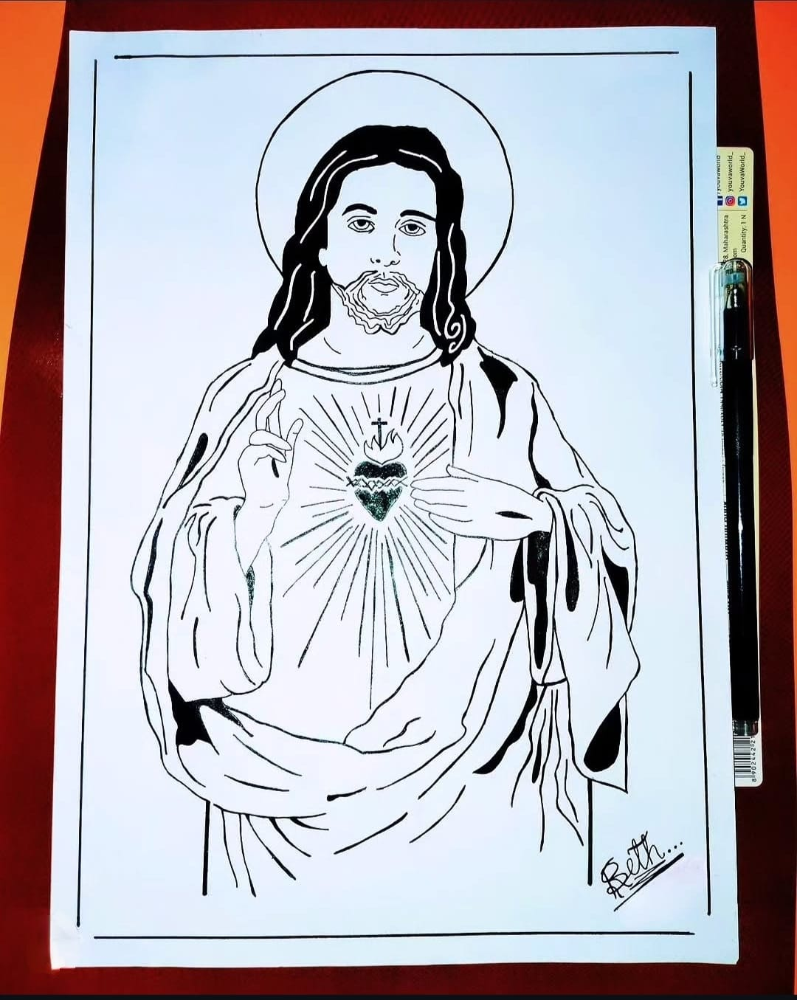

Jesus Christ

Medium: Pen Art
Year: 2023
This Artwork Represents Jesus Christ In A Detailed Pen Art Style,
The Jesus Christ Artwork Deeply Represents Love, Sacrifice, And Divine Compassion, With Gentle Expressions, Sacred
Light, And Emotional Depth Symbolizing Faith, Forgiveness, And The Eternal Hope That Guides Humanity Through Pain
And Redemption.